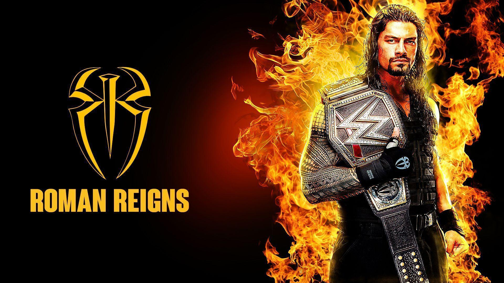

Leati Joseph "Joe" Anoaʻi (Samoan pronunciation: [a.noˈaʔ.i] ah-no-AH ee; born May 25, 1985), better known by his ring name Roman Reigns, is an American professional wrestler and former football player. As a wrestler, he has been signed to WWE since 2010, and currently performs on the SmackDown brand. He is the former leader of The Bloodline stable and a member of the Anoaʻi family.[4] Reigns's title reign of 1,316 days as Undisputed WWE Universal Heavyweight Champion was the fourth-longest world title reign in WWE history and the longest championship reign since 1988.[a]
After playing college football for Georgia Tech, Anoaʻi started his professional football career with brief off-season stints with the Minnesota Vikings and Jacksonville Jaguars of the National Football League (NFL) in 2007. He then played a full season for the Canadian Football League's (CFL) Edmonton Eskimos in 2008 before his release and retirement from football. He then pursued a career in professional wrestling and was signed by WWE in 2010, reporting to their developmental territory Florida Championship Wrestling (FCW). Under the ring name Roman Reigns, he made his main roster debut in 2012 as a member of The Shield alongside Dean Ambrose and Seth Rollins. They teamed together until disbanding in 2014, after which Reigns entered singles competition, though the trio